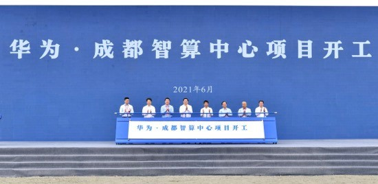

成都人工智能计算中心项目落地 助力打造
央广网成都6月10日消息（记者 邱栎艺）6月9日，成都人工智能
计算中心项目开工暨电子信息产业生态圈项目集中签约仪式在成都举
行。活动现场，成都人工智能计算中心项目正式奠基开工，首批15个
生态伙伴签约入驻，同时15个电子信息产业生态圈项目集中签约。
据悉，成都人工智能计算中心项目（简称“成都智算中心”）由华为
公司与成都高新区共同建设，将打造全球领先新一代人工智能计算平
台。华为公司副总裁、计算产品线总裁邓泰华表示，“成都人工智能计
算中心项目建设，是成都实施人工智能发展战略的重要举措，将成为
成都科技创新和数字经济发展的重要驱动力。”

首批入驻15个生态伙伴
成都人工智能计算中心开建
去年以来，华为先后在成都落地了未来技术创新中心（一、二
期）、成都鲲鹏生态基地等项目，并积极规划建设成研所二期。记者
了解到，当天开工建设的成都人工智能计算中心项目，由华为公司与
成都高新区共同建设运营。
项目包含“一中心、三平台”，“一中心”即“国家一体化大数据中心成
渝I类节点”，将结合成都在西部的经济、科技中心地位，承接国家重
要需求、科研创新和战略落地；“三平台”包括城市智脑平台、全球领先
（E级）人工智能计算平台、全球智能数据存储与机器视觉科研创新
平台。
项目总体分两期进行建设，其中一期预计2021年12月底完成投
资。该项目将打造全球领先新一代人工智能计算平台，基于华为昇腾
全栈基础软硬件建设，充分发挥成都在人工智能领域的应用场景多元
和科教资源丰富等优势，加强在智能空管、智慧医疗、智慧金融等场
景的应用示范，建成全球领先的人工智能计算平台，端到端打通
“产”“学”“研”“用”全产业链，支撑国家战略任务落地、促进经济与产业发
展融合。
活动现场，西南交通大学、四川长虹、成都交通投资集团有限公
司、成都纵横自动化技术股份有限公司、成都考拉悠然、罗克佳华等
首批15个生态伙伴签约入驻成都人工智能计算中心。
成都市相关负责人表示，成都人工智能计算中心项目开工暨生态
伙伴的入驻，标志着成都市推动建设国家新一代人工智能创新发展试
验区进入新的重要阶段。首批入驻生态伙伴涵盖产、学、研各个领
域，有利于在成都市快速形成人工智能产业“创新链、人才链、价值
链”。将结合成都新基建、十四五规划和智慧城市建设，把成都人工智
能计算中心打造成为成都智慧城市数字底座，建设城市智能中枢，把
现有城市数字大脑升级为城市智能体，提升城市治理能力，让企业和
市民享受智能、高效和贴心的服务。